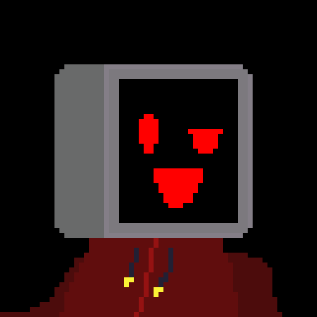

Soy VicentBytes... desarrollador joven enfocado en juegos y herramientas de escritorio, todavía aprendiendo pero con proyectos reales encima de la mesa, llevo 3-4 años programando. Mi objetivo o meta es alcanzar a trabajar de verdad en algún proyecto serio
Python, Godot, Lua, Luau, un poco de JavaScript, tambíen de Java y Scratch (aún mantengo la practica :D)
Me centro mucho en lo que es desarrollo de apps de escritorio, tanto videojuegos como herramientas, y los servidores me fascinan... un ejemplo de eso es mi proyecto FamilyDataBase
Gmail: vicentbytes@gmail.com
GameJolt: https://gamejolt.com/@VicentBytes
Github: https://github.com/vicentbytesofficial
Canales oficiales de Youtube:
VicentBytes: https://www.youtube.com/@VicentBytes
VicentBytesCoding: https://www.youtube.com/@VicentBytesCoding